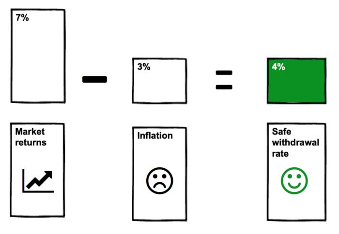
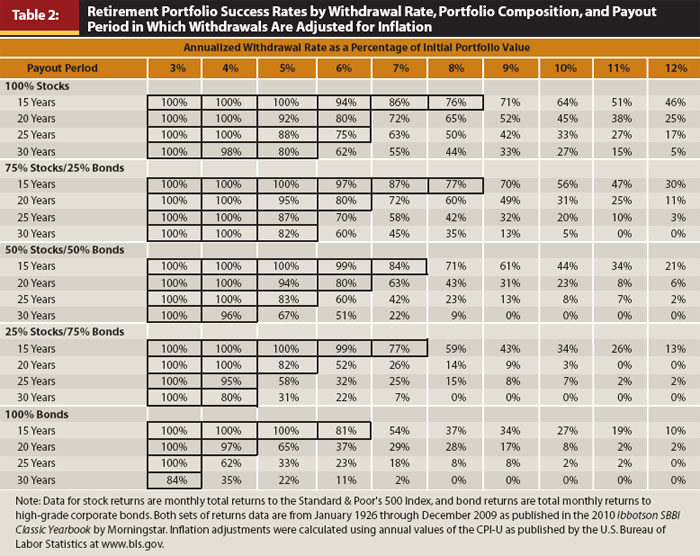
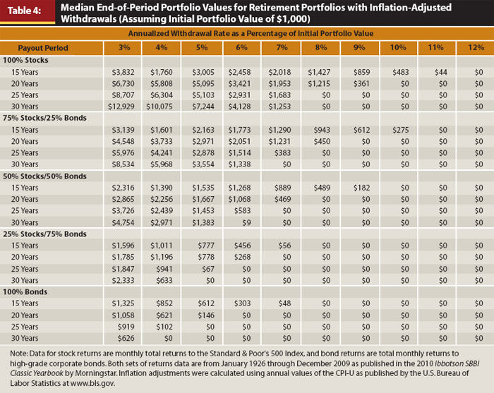

Financial freedom · Part 1
Chapter 2: "How much money do I need to retire at 40 (or 50, or 60)?

Looking to retire by 40, 50, or 60? Discover how much money you really need to retire with this simple formula
How much money do you need to retire at 40? The short answer is 25x your current annual expenses, invested in mostly stocks and bonds.
That's the short answer.
But if you want to go deeper down the rabbit hole, keep reading.
In this guide, you'll learn:
- What the 4% rule is, and common examples of it in action.
- The simplest ways to invest for the 4% rule to work (and what to avoid).
- The biggest concerns around the 4% rule—and why you shouldn't worry.
- What you need to do next (like, right now).
So... what the heck is the 4% rule?
The 4% rule states that you can safely withdraw 4% of your initial portfolio amount every year—and adjust that amount every subsequent year for inflation—without running out of money. In other words, it's how much money you need to retire.
Examples of the 4% rule (and how much money you need to retire for 30+ years)
| If you spend: | You need to invest: |
|---|---|
| $20,000 / year | $500,000 |
| $40,000 | $1 million |
| $60,000 | $1.5 million |
| $80,000 | $2 million |
| $100,000 | $2.5 million |
As you can see in the table above, if you spend $40,000 a year, you need $1 million invested. (1,000,000 * .04 = $40,000.)
You can plug in your own numbers as you see fit. Here's the equation:
[Total amount invested] x .04 = Annual income from investments
Or if you'd prefer to start with your annual expenses, use the following equation:
[Annual expenses] x 25 = Total investments needed
So, for example, say your annual expenses are $40,000. You simply multiply that by 25 and get $1,000,000. That's how much money you need to retire.
Simple, right?
Where the 4% rule came from—and why you can trust it
The term 4% rule was coined by William Bengen, and later popularized in what became known as The Trinity Study.
The Trinity Study asked a simple question: over any 30-year span in recent U.S. history (1926–2009), how much money could you withdraw each year without going broke? Put another way: how much money do you need to retire for 30+years?
To answer this question, they looked at each 30-year period (1926–1955; 1927–1956, etc.) and tested different withdrawal rates.
So, for example, if someone retired in 1926 (or 1927, or 1928), how much could they withdraw each year without going broke?
After backtesting each 30-year period, the researchers concluded the following:
"The sample data suggest that clients who plan to make annual inflation adjustments to withdrawals should plan lower initial withdrawal rates in the 4 percent to 5 percent range, again from portfolios of 50 percent or more large-company common stocks, in order to accommodate future increases in withdrawals."
The table below shows the success rate for each 30-year span between 1926–2009.
{kind=link}

As you can see in the table, if you invested 75% stocks/25% bonds, you'd enjoy a 100% success rate by withdrawing 4% of the initial amount for 30 years. In all historical cases, you'd have enough money to retire.
Think about that for a second.
What life looks like under the 4% rule
You could spend 30 years of your life doing whatever you wanted. You'd never need to work (unless you wanted to). You could travel the world, raise kids, write books, make music, hike the Appalachian trail, volunteer, garden—whatever your heart desired.
You would enjoy the absolute freedom to do whatever you wish. And 30 years is a long time. If you retire at 40, you'll have 30+ years to enjoy life on your own terms. Think about how many projects you could work on... how many books you could read... and how many people you could help.
The possibilities are endless.
Now, you may be thinking:
- Where do I invest my savings?
- And how do I save that much money?
Excellent questions. Let's tackle each one.
Where should you invest? Here are the most common investments for the 4% rule to work
The most common investments are a combination of stocks and bonds. Stocks mean you have ownership ("shares") in a company. Bonds mean you lend money to a company (or government) and are collecting interest on that loan.
The simplest, easiest way to invest are in these two low-cost index funds:
- Stocks: Total Stock Market Index Fund Investor Shares (VTSMX)
- Bonds: Total Bond Market Index Fund Investor Shares (VBMFX)
With those two simple index funds, you are now the proud owner of 3,591 companies (at time of writing) and 8,645 bonds—all of whom are working hard to grow their profits (and yours)! Not bad for about 5 minutes of work.
We'll cover index funds later in the guides on asset allocation and investment order. For now, all you need to know is:
- Stocks give you greater upside, but with increased volatility.
- Bonds give you less upside, but are less volatile.
What mix of stocks and bonds should I use?
Start with a 50/50 mix of stocks and bonds, then add a greater percentage into stocks if you have a long horizon (i.e. decades) and can handle greater volatility. (For the record, I don't own any bonds—but I have a long timeframe and high tolerance to volatility.)
For example, if you're looking to retire at 40, your timeline will (hopefully) be longer than someone who retires at 60. So you'll probably need more money invested in stocks to provide you with the future growth needed to perform for decades to come.
The above example is as simple as it gets. You can stop here, automate your investments, and be in fabulous shape. But if you're like me—a handsome devil who enjoys investing in other asset classes—then check out the asset allocation section.
Investments to avoid
Avoid active investments because they (i) have higher fees and (ii) generally don't perform as well as passive index investments.
And while you're at it, avoid any investment proposed to you by friends, family, or taxi drivers.
Lastly, avoid individual stocks; they do not provide the level of diversification and hands-off goodness that you'll get in an index fund.
The biggest concerns about the 4% rule—and why you shouldn't worry
Quitting your job to live off your investments requires a leap of faith that you have Enough—not just for now, but forever.
Being broke in your twenties is cool. Being broke in your seventies is terrifying.
So let's address the biggest concerns about the 4% rule—and see the powerful counter-objections to each.
"Can I really retire at 40 based on the 4% rule? What if I run out of money?"
Relax. The 4% rule isn't really a rule—it's a guideline.
It assumes you never:
- make money, ever again.
- reduce fees on your investments. (The Trinity Study assumed a 1% expense, which is crazy high! By comparison, Vanguard's current expense ratio is a tiny .04%. Assuming $1-million invested, that's an extra $9,600 in your pocket every year. This also changes your withdrawal rate from 4% to 4.96%. Which is amazing.)
- inherit any money.
- collect Social Security or a pension.
- pay your mortgage off (and therefore reduce your living expenses).
- reduce your spending when (not if) the shit hits the fan.
The last point is especially important. Any sane person would reduce their spending if the market suddenly dropped 20+%. Yet the Trinity Study assumes that you would blindly withdraw 4% every year, year after year, no matter what happened.
Ask yourself: if the stock market drops 50% the first year you "retire", would you continue to withdraw 4% each year, while your investments continued to dwindle? Or would you reduce your spending, pick up a part-time gig, and ride out the storm until the market recovered?
I'd pick the latter; I suspect most people would, too. Or, god forbid, go back to a full-time job for a year or two.
You see, it's these "common sense" reactions that the Trinity Study, and, by association, the 4% rule, don't include—which makes their projections extremely conservative.
"What if I retire and the stock market tanks in the first few years? Will I still be OK?"
Probably.
Remember: the 4% rule showed that, over a 30-year period, an investment of 50/50 stocks and bonds would survive 96% of the time. In other words, there is only a 1 in 20 chance that you would need to reduce your expenses; in the other 19 instances, you're set for life.
Let me say that again: 19 out of 20 times, you would never need to reduce your expenses, never earn another dime, and never pull any money from Social Security or a pension. You could blindly pull 4% each and every year, adjusted for inflation, without a single hiccup.
So what about the unlucky 1 in 20?
Here's a worst-case example
If the market plummets early on, you could find yourself one of the unlucky 1 in 20 of cases (say, someone who retired in 1965).
But remember: the 4% rule doesn't assume you'll reduce your expenses, take a part-time gig or (gasp!) go back to work for a year or two. And that's the absolute worst-case scenario (besides, you know, asteroids, aliens, or the complete fall of civilization).
If the worst-case scenario is that you have to spend a little less or go back to work, is that really so bad? That you enjoy your financial freedom for a few years, go back to work for a year or two (preferably on a fun project), and then retire for real—at the age of 40, or 50? Is that so terrible? To me, the "worst-case scenario" still puts you decades ahead of most people.
And here's one other benefit: because you've saved 25 years worth of expenses, you have decades before you run out of money. So if you don't want to slash your expenses, or work part-time for the first decade—you don't have to. You'll still have a giant pile of money to live on for decades. There is plenty of time to course-correct if needed; why rush?
Now, you may have noticed my overuse of italics on the word "decades." That's because you must understand how this approach takes the long view, and no single year—or two, or three, or five—can take you totally off course. This approach is conservative as-is, and with the ability to course-correct decades later gives you the ultimate flexibility.
"OK, so if the market tanks, I can always reduce my spending or go back to work for awhile. But what if the market tanks when I'm old and can't return to the workplace?"
Don't worry.
When the market tanks—and it will over several decades—you'll be so far ahead that it won't matter. Your investments will have grown vastly over the past few decades, and even a significant drop won't send you back to work.
As Michael Kitces explains: "the true driver of sequence of return risk and safe withdrawal rates are the returns that the retiree earns over the first decade."
In other words, if your portfolio looks OK after the first ten years, you're good for life.
"But all this data is based on the past. But what if the future isn't like the past?"
It may not be.
After all, the Trinity Study is based on historical data, and history rarely repeats itself.
But remember: the Trinity Study covered a wide variety of outcomes, including:
- Two world wars
- The Great Depression
- Hyperinflation
- The oil embargo
- Black Monday (the largest one-day percentage decline in stocks in U.S. history)
- 9/11
- The Great Recession
... plus a whole bunch of other wars, financial meltdowns, and political upheavals.
Yet despite all this turmoil, the 4% rule not only survived, it thrived.
Don't believe me? Take a look at the table below:
{kind=link}

Looking at the table above, you'll see that the median amount for a 75/25 stocks/bond portfolio , after 30 years of withdrawals, has not only survived, it is almost six times higher than the initial amount.
Imagine living your best possible life—doing whatever the hell you want—and, after 30 years, discovering that your wealth has grown by nearly six times, without you working another day in your life.
Now I don't know about you, but I find that very, very reassuring.
"OK, I get it. I can withdraw 4% of the initial amount every year, and my portfolio will probably still grow over time. But I'm super conservative, and still worried. What can I do?"
You've two options:
-
Lower your withdrawal rate. Withdraw 3.5%. Or even 3%. Take a look at the tables again; you'll see that a 3% withdrawal rate is 100% successful. Of course, it will take you longer to reach this number. A 3% withdrawal is equal to 33x your expenses; a 4% withdrawal is only 25x expenses. But if you need that extra sense of security to sleep well at night, well, that's your right.
-
Reduce your expenses. Try house sitting to eliminate your housing expense. Sell your car and ride a bike. Follow the ideas in the Reduce your expenses section. Remember: going from 4% to 3.5% is the same as cutting your current spending by 12%. If you can make that work, great; if not, keep saving. Or just embrace the 4% rule. :)
"When calculating how much money I need to retire, can I include my home equity in my assets?"
No. You only include your investable assets, which include stocks and bonds. We aren't talking about your net worth; we're talking about assets that will pay your bills going forward.
"OK, I'm convinced the 4% is legit. But how am I supposed to save all that money?"
I get it. If you're just getting started, the path can seem impossibly long. But as you'll see, it's faster than you think.
Because it's just not about living off of 4%. There are other exciting milestones—which are much easier to reach—waiting for you in the next section: The different levels of financial freedom.
What next? Calculate how much money you need to retire in 3 easy steps
-
Find out how much money you need to retire. Do this by taking your current spending and multiply it by 25. This is how much you need to be financially free.
-
Find out how much money you have. Look at your total investments (stocks, bonds, retirement accounts—everything but your home equity).
-
Subtract step 2 from step 1. This is how much more money you need to invest to retire.
Here's a quick example:
Sally looks at her expenses and realizes she'll need about $3,000 per month, or $36,000 a year, to live comfortably.
Step 1. Sally multiplies her annual expenses by 25 (36,000 * 25); therefore, she needs $900,000 to retire.
Step 2 . Sally looks at her current investments and sees she has $600,000 invested.
Therefore, Sally needs to save another $300,000.
The math is simple; the psychology is hard. It's easy to look at a huge number like $300,000 and despair. "I'll never get there! It's just too much!"
Don't worry. We'll cover this in the next section.